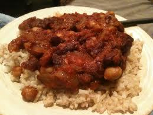

Total time:
1 Hour
10 mins
Ingredients:
2 tablespoons olive oil
1 large white onion, chopped
1/2 cup dry lentils
2 cloves garlic, minced
3 tablespoons curry powder
1 teaspoon ground cumin
1 pinch cayenne pepper
1 can crushed tomatoes (28 ounce)
1 can garbanzo beans, drained and rinsed (15 ounce)
1 can kidney beans, drained and rinsed (8 ounce)
1/2 cup raisins
8 cups cooked brown rice
salt and pepper to taste
Directions:
- Prepare the brown rice according to package directions so you have enough for 8 servings.
- Heat the oil in a large pot over medium heat, and cook the onion until tender.
- Mix in the lentils and garlic, and season with curry powder, cumin, and cayenne pepper. Cook and stir 2 minutes.
- Stir in the tomatoes, garbanzo beans, kidney beans, and raisins. Season with salt and pepper.
- Reduce heat to low, and simmer at least 1 hour, stirring occasionally.